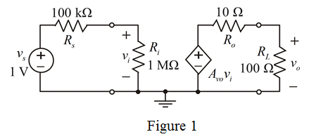

Apply voltage divider method to the input section of the circuit in Figure 1 to obtain the input voltage.
Apply voltage divider method to the output section of the circuit in Figure 1 to obtain the output voltage.
Thus, the load voltage,  is .
is .
Consider the following buffer amplifier circuit diagram:

Apply voltage divider method to the input section of the circuit in Figure 1 to obtain the input voltage.
Apply voltage divider method to the output section of the circuit in Figure 1 to obtain the output voltage.
Thus, the load voltage, is .
Calculate the voltage gain of the circuit.
Substitute 0.83 V for  , and 1 V for
, and 1 V for  .
.
Convert the voltage gain into decibels.
Hence, the voltage gain,  in decibels is .
in decibels is .
Calculate the current gain.
Substitute 0.83 for  ,
,  for
for  ,
,  for
for  and
and  for
for  .
.
Convert the current gain into decibels.
Thus, the current gain,  in decibels is .
in decibels is .
Substitute 0.83 for  , and 9130 for .
, and 9130 for .
Convert the power gain into decibels.
Thus, the power gain, in decibels is .